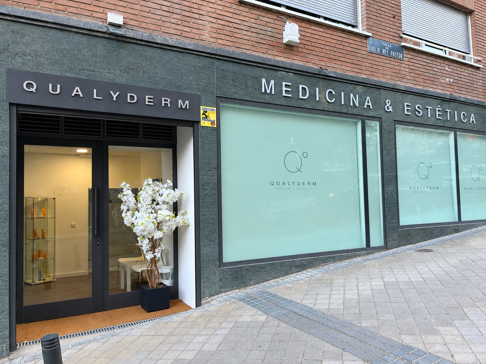
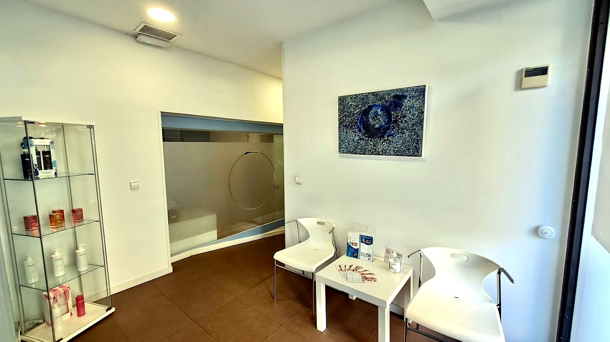
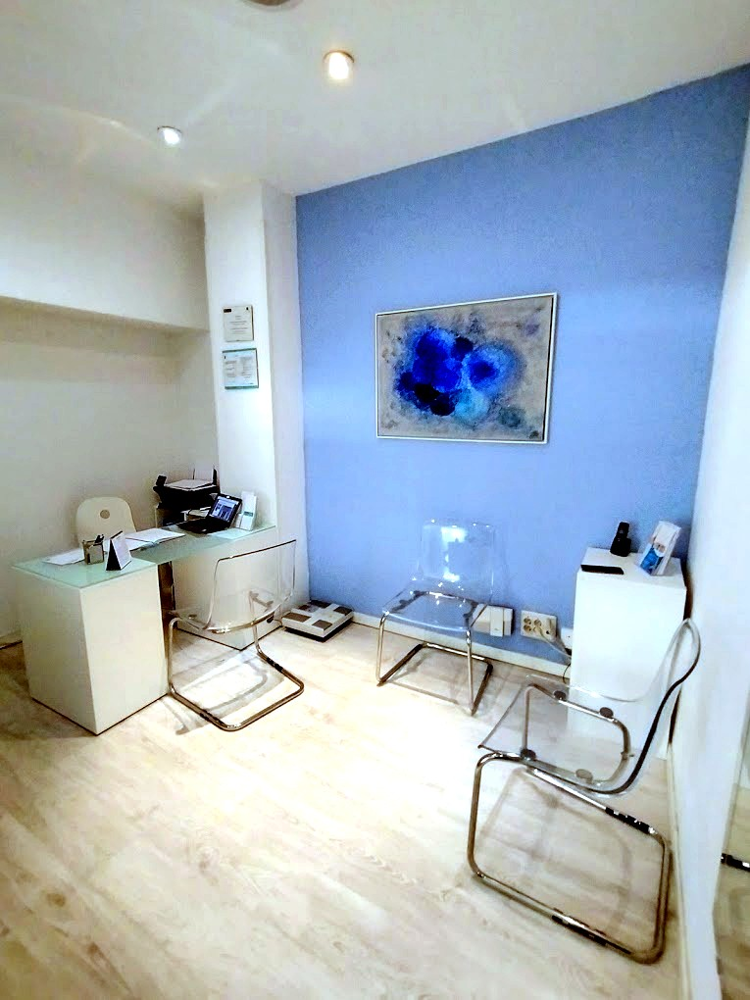
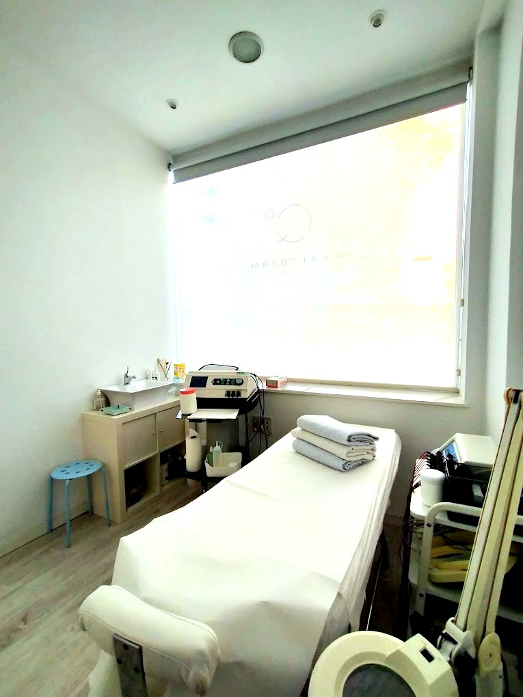
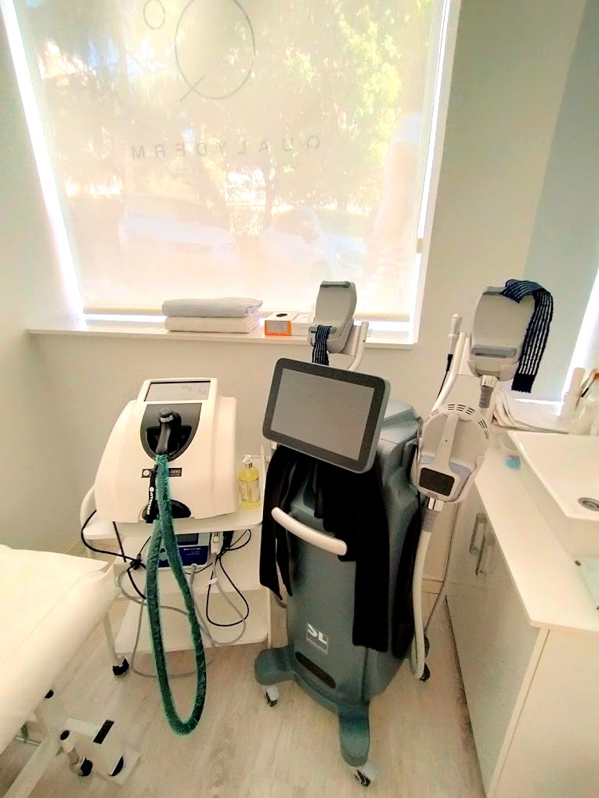
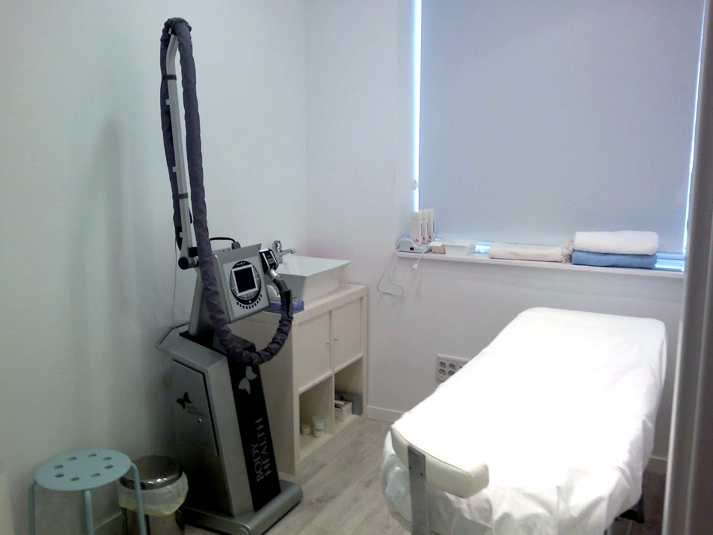

Este centro de medicina y estética está formado por un equipo de profesionales con más de 35 años de experiencia dedicado al estudio de la belleza. Para ello dispone de diferentes áreas de trabajo: el área de estética cuenta con su directora, técnica especialista en estética con una amplia trayectoria, siempre buscando la innovación, tecnología y activos más adecuados a cada cliente, aportando rigor y seriedad a cada tratamiento como si fuese el único.
En el área de Medicina Estética, nuestra doctora, pionera en técnicas de infiltración y especialista en rejuvenecimiento integral, es Licenciada en Medicina y Cirugía, con Diplomatura en bases clínicas en medicina y cirugía cosmética y Diplomatura en medicina del envejecimiento.
Así es Qualyderm por dentro y por fuera: una fachada discreta en la calle Julio Rey Pastor y cabinas luminosas donde tratamos cada caso con tiempo y atención.






En el barrio de Retiro, bien comunicado y fácil de encontrar.
Cabinas luminosas y tranquilas, pensadas para que la experiencia sea tan agradable como el resultado.
Protocolos de limpieza estrictos y aparatología profesional en cada sala.
La mejor forma de conocer Qualyderm es viviéndolo. Reserva tu cita o pásate a preguntar lo que necesites.